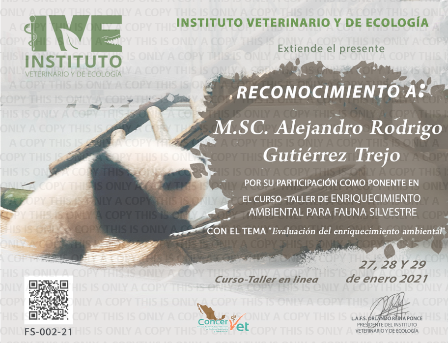
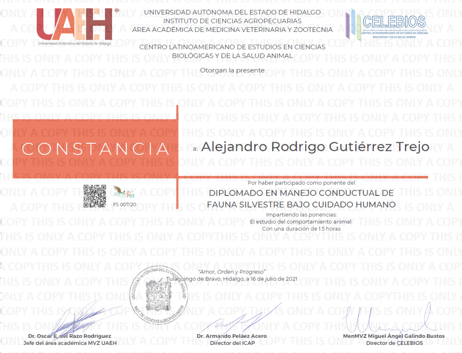
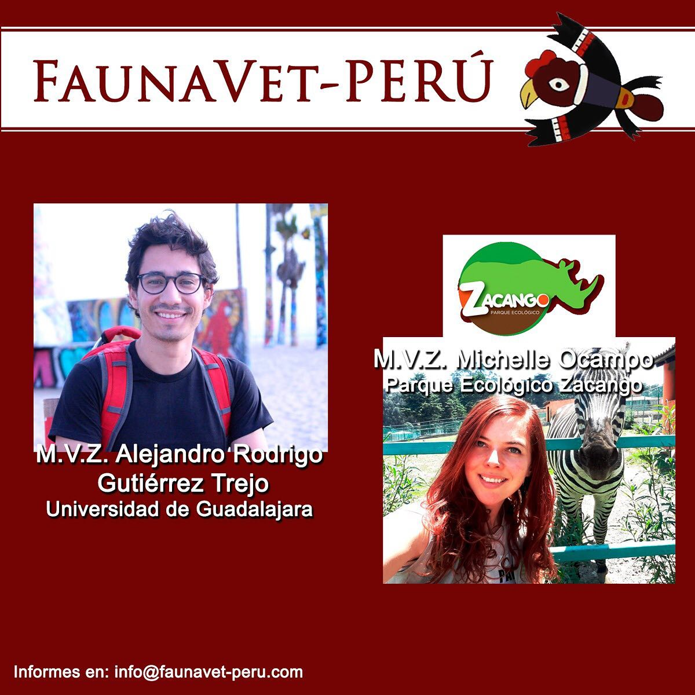
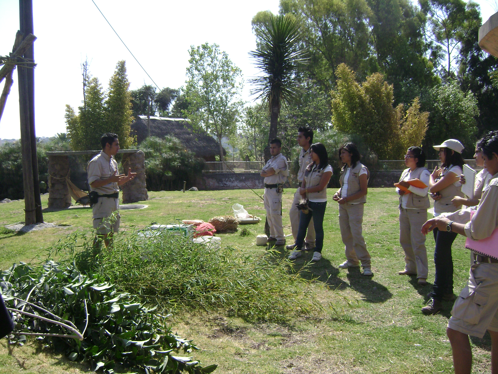

Work experience
1 Founding Partner, and Chief Operating and Commercial Officer (September 2018 - Today).
Walden Modular Equipment — Guadalajara, Jalisco (Mexico).
Main duties:
- Oversee day-to-day administrative and operational functions of the company.
- Coordination of the development, production, marketing, and finance departments’ actions.
- Ensure the company complies with the local laws and regulations.
- Manage and expand the client portfolio.
- Supervision and improvement of customer service and satisfaction guidelines.
- Control of future investments and purchases.
2 Online Module Lecturer (August 2022)
Lecture: “The study of animal behavior.”
Course: Certified Course on Behavioral Management of Wildlife under Human Care.
Institution: Latin American Center for Studies in Biological Sciences and Animal Health – Pachuca, Hidalgo (Mexico).
3 Online Module Lecturer (July 2022)
Lectures: “S.P.I.D.E.R. Model” and “Evaluation of the environmental enrichment program”
Course: New Trends in the Environmental Enrichment of Wildlife.
Institution: Veterinary and Ecology Institute — Puebla, Puebla (Mexico).

4 Online Module Lecturer (June 2021)
Lecture: “Documentation and evaluation of zoo training programs”.
Course: Ex-Situ Wildlife Behavior, Enrichment, and Training Principles Seminar.
Institution: Zoological Foundation of Ecuador — Quito, Ecuador (Ecuador).
5 Online Module Lecturer (January 2021)
Lecture: “Evaluation of the environmental enrichment program.”
Course: 1st Workshop on Environmental Enrichment in Wild Fauna (Theoretical – Online).
Institution: Veterinary and Ecology Institute – Puebla, Puebla (Mexico).

6 Online Module Lecturer (July 2020)
Lecture: “The study of animal behavior.”
Course: Certified Course on Behavioral Management of Wildlife under Human Care.
Institution: Latin American Center for Studies in Biological Sciences and Animal Health – Pachuca, Hidalgo (Mexico).

7 Online Module Lecturer (July 2020)
Lecture: “Observation and analysis of animal behavior.”
Course: Online course: Welfare in wild animals’ ex-situ.
Institution: FaunaVet-Peru – Lima, Perú (Perú).

8 Call Center Coach (January 2016 - January 2017)
Beliveo – Guadalajara, Jalisco (Mexico).
9 Veterinarian (November 2012 – November 2013)
South Veterinary Clinic – Mexico City, CDMX (Mexico).
10 Animal Welfare Coordinator (July 2011 – April 2013)
Africam Safari – Puebla, Puebla (Mexico).
Main duties:
- Coordination of undergraduate students and volunteers involved in the environmental enrichment program.
- Scheduling day-to-day activities of the program.
- Overseeing electronic documentation and reports on environmental enrichment and animal training programs.
- Review of safety protocols based on institutional guidelines to provide and improve the well-being of animals.
- Provision of expertise about the biology of species to media and zoo guests.
